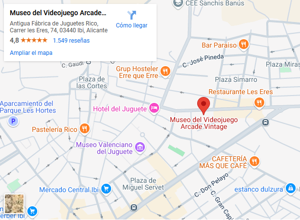

Museu vintage del videojoc
El museu - Exposicions - Visita virtual - Blog - Contacte
¿Quienes somos?
Somos el primer gran Museo del Videojuego de España. En él podras encontrar más de 300 equipos informáticos,
recorriendo la increible historia de los videojuegos desde los años 60 hasta la actualidad, descubriendo auténticos
videojuegos míticos restaurados y conservados en perfecto estado original. También apoyamos a nuevos creadores de videojuegos
retro, freeware e indie, creando máquinas arcade ex profeso con sus juegos.


Realizamos todo tipo de actividades: Exposiciones, charlas, competición de videojuegos, talleres, desarrollo.
El sueño de todo informático